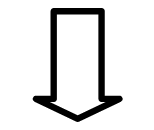
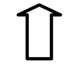
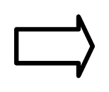
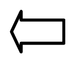
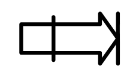
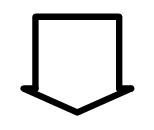

БК-0011 - Руководство системного программиста
ПРОГРАММНОЕ ОБЕСПЕЧЕНИЕ
ДРАЙВЕР-МОНИТОРНАЯ СИСТЕМА
РУКОВОДСТВО СИСТЕМНОГО ПРОГРАММИСТА
00008-01.32.01
1989
Содержание
- АННОТАЦИЯ
-
1. ВВЕДЕНИЕ
- 1.1. Состав ЭВМ
- 1.2. Архитектура ЭВМ
-
1.3. Регистры
внешних устройств ЭВМ
- 1.3.1. Регистр состояния клавиатуры
- 1.3.2. Регистр данных клавиатуры
- 1.3.3. Регистр смещения
- 1.3.4. Регистр параллельного программируемого интерфейса
- 1.3.5. Системный регистр
- 1.3.5.1. Регистр чтения
- 1.3.5.2. Регистр записи
- 1.3.6. Регистры дополнительных внешних устройств
- 1.3.6.1. Регистры КНГМД
- 1.3.6.2. Регистр КПУ
- 1.4. Вектора прерываний
- 1.5. Особенности выполнения команд
- 2. ФУНКЦИИ ДРАЙВЕР-МОНИТОРНОЙ СИСТЕМЫ
-
3. КОМАНДЫ
EMT ДРАЙВЕР-МОНИТОРНОЙ СИСТЕМЫ
- 3.1. Общесистемные запросы
-
3.2. Запросы
драйвера ОЗУ/ПЗУ
- 3.2.1. Подключение страницы ОЗУ/ПЗУ .BSETPG
- 3.2.2. Вызов подпрограммы из скрытой страницы .BJSR
- 3.2.3. Переход в скрытую страницу без возврата .BJMP
- 3.2.4. Чтение из скрытой страницы ОЗУ/ПЗУ .BPEEK
- 3.2.5. Запись слова в скрытую страницу ОЗУ .BPOKE
- 3.2.6. Запись байта в скрытую страницу ОЗУ .BPOKB
- 3.2.7. Чтение статуса страницы ОЗУ/ПЗУ .BTEST
-
3.3. Запросы
драйвера клавиатуры
- 3.3.1. Инициализация драйвера клавиатуры .BKBINI
- 3.3.2. Чтение символа с ожиданием .BTTYIN
- 3.3.3. Чтение строки с редактированием .BGTLIN
- 3.3.4. Установка функциональных клавиш .BFUNCT
- 3.3.5. Экранное редактирование существующей строки .BEDIT
- 3.3.6. Установка режима работы клавиатуры .BKSET
- 3.3.7. Чтение режима работы клавиатуры .BKGET
- 3.3.8. Ввод символа с клавиатуры без ожидания .BINKEY
-
3.4. Запросы
драйвера телевизионного приёмника
- 3.4.1. Вывод символа на экран .BTTYOU
- 3.4.2. Вывод строки символов .BPRINT
- 3.4.3. Вывод символа в служебную область экрана .BSSOUT
- 3.4.4. Установка координат алфавитно-цифрового курсора .BLOCAT
- 3.4.5. Чтение координат алфавитно-цифрового курсора .BPOS
- 3.4.6. Вывод графической точки .BPOINT
- 3.4.7. Чтение цвета точки экрана .BGETPNT
- 3.4.8. Вывод графического вектора .BVECT
- 3.4.9. Переключение буферов экрана .BBUFSET
- 3.4.10. Установка параметров драйвера телевизионного приёмника .BTVSET
- 3.4.11. Чтение состояния драйвера телевизионного приёмника .BTVGET
- 3.4.12. Построчный сдвиг экрана .BSCROLL
- 3.4.13. Рисование дуг и окружностей .BCIRCL
- 3.4.14. Вывод звукового сигнала .BSOUND
- 3.5. Запросы драйвера магнитофона
- 3.6. Запросы драйвера НГМД
- Приложение 1. Кодировка символов ЭВМ
- Приложение 2. Редактирование строки
- Приложение 3. Формат таблицы управления режимом ТВ.
- Приложение 4. Таблица палитр
- Приложение 5. Таблица соответствия клавиш клавиатуры и обозначения клавиш в тексте
АННОТАЦИЯ
Настоящее руководство рассчитано на пользователей микро-ЭВМ Электроника МС 0513 ("Электроника БК0011", далее - ЭВМ), программирующих на уровне языка ассемблера.
В руководстве описаны функции драйвер-мониторной системы ЭВМ и способы обращения к ним из пользовательских программ.
В отдельную главу выделено описание команд оператора, позволяющих пользователю работать с ЭВМ в интерактивном режиме, вводить, отлаживать в кодах и запускать программы, считывать и записывать программы на магнитную ленту и т. д.
1. ВВЕДЕНИЕ
1.1. Состав ЭВМ
В состав ЭВМ входят:
- информационно-вычислительное устройство;
- блок питания;
- блок контроллера накопителя на гибких магнитных дисках (КНГМД);
- блок контроллера печатающего устройства (КПУ);
- блок контроллера локальной сети (КМК);
- блок ПЗУ;
- кабели связи с внешними устройствами.
В качестве устройства отображения информации может использоваться чёрно-белое или цветное видеоконтрольное устройство или бытовой телевизор, имеющий вход видеосигнала или RGB-вход. В качестве внешних запоминающих устройств могут использоваться кассетный монофонический магнитофон (например, типа "Электроника 302") и до четырёх накопителей на 133-мм гибких магнитных дисках. Для записи и хранения информации используются соответствующие компакт-кассеты (МК60, МК90 и т.п.) и гибкие магнитные диски.
Связь нескольких ЭВМ в локальную сеть осуществляется с помощью контроллера моноканала.
Связь с внешними устройствами пользователя осуществляется через 16-разрядный параллельный программируемый интерфейс.
Для связи программ пользователя со стандартными периферийными устройствами, распределения ресурсов ЭВМ, связи ЭВМ с оператором используется драйвер-мониторная система, размещённая в системном ПЗУ объёмом 16Кбайт.
Обращение из программы пользователя к системным программам драйвер-мониторной системы осуществляется с помощью системных запросов - команд "EMT" с различными аргументами.
Общение между оператором и драйвер-мониторной системой осуществляется с помощью команд оператора, подаваемых с клавиатуры.
ПРИМЕЧАНИЕ. Приводимые в документе числа без последующей точки - восьмеричные, с точкой - десятичные.
1.2. Архитектура ЭВМ
ЭВМ построена на основе микропроцессорного комплекта серии К1801 и включает в себя:
- однокристальный 16-разрядный микропроцессор К1801ВМ1;
- оперативное запоминающее устройство (ОЗУ) ёмкостью 128 Кбайт со страничной организацией, выполненное на микросхемах К565РУ5;
- системное ПЗУ ёмкостью 16 Кбайт;
- контроллер клавиатуры на базе БИС К1801ВП1-014;
- контроллер ОЗУ и телевизионного графического дисплея на базе БИС К1В01ВП1-037;
- контроллер накопителя на бытовом кассетном магнитофоне;
- 16-разрядный параллельный программируемый интерфейс.
Отдельные функциональные узлы ЭВМ соединены с помощью межмодульного параллельного интерфейса МПИ ОСТ 11.305.903-80.
Обслуживание перечисленных устройств, осуществляется соответствующими программами - драйверами, расположенными в системном ПЗУ ЭВМ.
Обслуживание внешних блоков контроллеров НГМД и локальной сети выполняется программами, расположенными в ПЗУ контроллера НГМД и в сменном ПЗУ микро-ЭВМ.
1.2.1. Распределение адресного пространства ЭВМ
Виртуальное адресное пространство ЭВМ определяется возможностями процессора К1801ВМ1 и составляет 64Кбайт. Распределение адресного пространства показано на рис. 1.
|
Переключаемые страницы ОЗУ и ПЗУ |
||||||||||
|
/ |
\ |
|||||||||
|
стр. ОЗУ 0 |
. . . . . |
. . . . . |
сист. ПЗУ |
Регистры ВУ |
||||||
|
0 |
40000 |
100000 |
140000 |
160000 |
177777 |
|||||
|
| |
| |
|
||||||||
|
стр. ОЗУ 0...7 |
стр. ОЗУ 0...7 |
|||||||||
|
или |
||||||||||
|
стр. ПЗУ 8...11 |
||||||||||
|
или |
||||||||||
|
внешний блок ПЗУ |
||||||||||
Рис.1. Распределение адресного пространства ЭВМ
Переключение страниц ОЗУ/ПЗУ осуществляется программно с использованием системного регистра ЭВМ.
Следует обратить внимание, что каждая страница ОЗУ может быть одновременно подключена к двум окнам виртуального адресного пространства, а статическая страница (адреса 0-40000) - даже к 3-м. Переключение страниц из пользовательской программы может осуществляться с помощью запросов EMT драйвер-мониторной системы.
Две страницы ОЗУ являются буферами экрана. Один из буферов постоянно отображается на экране телевизионного приёмника. Управление отображением того или иного буфера экрана так же возложено на драйвер-мониторную систему, причём имеется возможность "скрытого" вывода на экран, т.е. формирование изображения из программы пользователя в одном буфере в то время, как на экран выводится другой.
Одна из переключаемых страниц ОЗУ является служебной страницей драйвер-мониторной системы ЭВМ и недоступна пользователю.
1.3. Регистры внешних устройств ЭВМ
Работа ЭВМ с периферийными (внешними) устройствами выполняется через регистры внешних устройств, для которых выделен диапазон 160000-177777 адресного пространства. Ниже описаны регистры стандартных периферийных устройств. Остальные адреса регистров зарезервированы для подключения дополнительных периферийных устройств.
1.3.1. Регистр состояния клавиатуры
Адрес регистра - 177660
Формат регистра
| Разряд 7 - | "1" в этом разряде означает, что в регистре данных клавиатуры находится код нажатой клавиши. Устанавливается при нажатии на клавишу, сбрасывается при чтении регистра данных клавиатуры. При нулевом состоянии 6-го разряда установка в "1" вызывает прерывание. Доступен только по чтению. |
| Разряд 6 - | "0" в этом разряде разрешает выработку сигнала требования прерывания по единичному значению разряда 7. |
Остальные разряды регистра не используются, читаются как 0.
По сигналу сброса магистрали разряд 6 устанавливается в "1", разряд 7 обнуляется.
ПРИМЕЧАНИЕ. См. также информацию о бите 6 в системном регистре ЭВМ.
1.3.2. Регистр данных клавиатуры
Адрес регистра - 177662
Формат регистра:
Разряды 0-6 содержат код нажатой клавиши. Разряды 7-15 не используются, читаются нулями.
Младший байт регистра доступен только по чтению. Данные сохраняются в регистре до нажатия следующей клавиши клавиатуры. При установленном в "1" 7-м разряде регистра состояния запись в регистр данных блокируется, и нажатия клавиш игнорируются.
Старший байт регистра доступен только по записи. Разряды 8-11 задают код цветовой палитры в соответствии с таблицей из приложения 4.
Разряд 14 управляет таймером 48,5Гц ("0" - прерывание разрешено). При включении питания разряд 14 устанавливается в "1" (прерывание запрещено).
Разряд 15 управляет прерыванием по клавише "СТОП" ("0" - прерывание разрешено). При включении питания разряд 15 устанавливается в "0".
1.3.3. Регистр смещения
Регистр смещения предназначен для управления "РУЛОННЫМ" сдвигом информации на экране по вертикали путём задания адреса в буфере экрана, с которого должна начинаться регенерация изображения.
Адрес регистра - 177664
Формат регистра
| Разряд 9 - | при записи "1" в этот разряд на экране отображается весь буфер экрана (256. телевизионных строк). При нулевом значении в верхней части растра отображается 1/4 часть (старшие адреса) экранного ОЗУ, нижняя часть экрана не отображается. Данный режим не используется драйвер-мониторной системой. |
| Разряды 7-0 - | в этом поле задаётся адрес строки экранного ОЗУ, с которой начинается отображение экрана. |
ОЗУ буфера экрана считается "замкнутым в кольцо". Экран состоит из 256. строк по 64. байта в каждой. Строки начинаются с адресов, кратных 100 (восьмеричное). Первый байт строки расположен в левом конце строки, байты отображаются, начиная с младшего бита. Смещение задаётся в строках, т.е. изменение кода смещения на 1 приводит к кольцевому сдвигу информации на экране на одну строку растра. Исходному состоянию (первый байт буфера экрана отображается в самой верхней строке растра) соответствует значение смещения 330 (восьмеричное). Увеличение значения соответствует сдвигу информации вверх, уменьшение - вниз.
Остальные разряды не используются. Регистр доступен по записи и чтению.
1.3.4. Регистр параллельного программируемого интерфейса
Этот 16-разрядный регистр предназначен для записи информации в выходной порт и чтения информации со входного порта.
Адрес регистра - 177714
Возможность прочитать состояние выходного порта отсутствует. Фактически в ЭВМ реализованы два независимых регистра, имеющие один и тот же адрес:
- доступный только по записи регистр выходного порта.
- доступный только по чтению регистр входного порта.
1.3.5. Системный регистр
Используется при начальном запуске процессора, для переключения страниц ОЗУ/ПЗУ, управления внешними устройствами ЭВМ.
Адрес регистра - 177716
Фактически по указанному адресу расположены два регистра:
-
регистр, доступный только по чтению;
-
регистр, доступный только по записи.
1.3.5.1. Регистр чтения
Формат регистра:
| Разряды 15-8 - | определяют адрес начального пуска ЭВМ по включению питания (140000); |
| Разряд 7 - | должен быть равен "1"; |
| Разряд 6 - | установлен в "0", если нажата любая клавиша клавиатуры ЭВМ. Устанавливается в "1" по отпусканию клавиши; |
| Разряд 5 - | разряд данных контроллера магнитофона; |
| Разряд 2 - | этот разряд устанавливается в "1" по любой операции записи в системный регистр. Сбрасывается в "0" по окончанию операции чтения системного регистра. |
Об использовании этого разряда см. в разделе, посвящённом особенностям выполнения некоторых команд ЭВМ.
Остальные разряды не используются и читаются нулями.
1.3.5.2. Регистр записи
Формат регистра:
15 14 13 12 11 10 09 08 07 06 05 04 03 02 01 00 ┌──┬──┬──┬──┬──┬──┬──┬──┬──┬──┬──┬──┬──┬──┬──┬──┐ │ .│ X│ X│ X│ 1│ X│ X│ X│ X│ X│ X│ X│ X│ X│ X│ X│ └──┼──┴──┴──┼──┼──┴──┴──┼──┼──┴──┼──┴──┴──┴──┴──┘ └───┬────┘ │└────┬───┘ │└──┬──┘ │ │ │ │ │ управление переключением │ │ │ │ │ │ │ страниц ОЗУ по│ адресам │ │ │ │ │ │ │ 40000-100000 │ 100000-140000 │ │ │ │ │ │ │ │ │ │ │ │ │ │ Разрешение записи │ │ │ │ │ │ │ в системный регистр │ │ │ │ │ │ │ Управление двигателем ────┘ │ │ │ │ │ │ магнитофона │ │ │ │ │ │ Выходной регистр данных ────┘ │ │ │ │ │ контроллера магнитофона │ │ │ │ │ Разрешение работы страниц ПЗУ ─┴──┴──│──┴──┘ Переключение буфера экрана ───┘
| Разряды 14-12 - | определяют номер страницы ОЗУ, подключаемой на адреса 40000-100000 (см. ниже); |
| Разряды 10-8 - | определяют номер страницы ОЗУ, подключаемой на адреса 100000-140000; |
| Разряд 7 - | значение "0" этого разряда вызывает включение двигателя магнитофона (замыкает контакты реле дистанционного управления); |
| Разряды 6 и 5 - | задают выходные данные контроллера магнитофона; разряд 6 также подаётся на излучатель звука ЭВМ; |
| Разряд 4 - | разрешает подключение к адресному пространству 100000-140000 страницы ПЗУ № 11., отключает страницу ОЗУ с соответствующих адресов; |
| Разряд 3 - | разрешает подключение к адресному пространству 100000-140000 страницы ПЗУ № 10., отключает страницу ОЗУ с соответствующих адресов; |
| Разряд 2 - | при единичном значении этого бита отображается буфер экрана № 1 (страница ОЗУ № 6). При нулевом - буфер экрана № 0 (страница № 5): |
| Разряд 1 - | разрешает подключение к адресному пространству 100000-140000 страницы ПЗУ № 9., отключает страницу ОЗУ с соответствующих адресов; |
| Разряд 0 - | разрешает подключение к адресному пространству 100000-140000 страницы ПЗУ № 8., отключает страницу ОЗУ с соответствующих адресов; |
| Бит | 14 | 13 | 12 | |
|---|---|---|---|---|
| (10 | 9 | 8) | ||
| 1 | 1 | 0 | страница 0 (постоянно отображена 0...40000) | |
| 0 | 0 | 0 | страница 1 | |
| 0 | 1 | 0 | страница 2 | |
| 0 | 1 | 1 | страница 3 | |
| 1 | 0 | 0 | страница 4 | |
| 0 | 0 | 1 | страница 5 (буфер экрана 0) | |
| 1 | 1 | 1 | страница 6 (буфер экрана 1) | |
| 1 | 0 | 1 | страница 7 (системная страница) |
ПРИМЕЧАНИЕ. Запись в регистр возможна только при установленном в "1" 11-м бите, только по командам, работающим с регистром, как с целым словом.
Страницы 8 и 9 ПЗУ зарезервированы:
| - | в странице 8 и адресном пространстве 100000-117777 страницы 9 расположены ПЗУ языка программирования BASIC, в адресах 120000-137777 расположены программы драйвер-мониторной системы. |
1.3.6. Регистры дополнительных внешних устройств
1.3.6.1. Регистры КНГМД
Регистр состояния.
Адрес регистра - 177130
┌──┬──┬──┬──┬──┬──┬──┬──┬──┬──┬──┬──┬──┬──┬──┬──┐ │15│14│13│12│11│10│ 9│ 8│ 7│ 6│ 5│ 4│ 3│ 2│ 1│ 0│ └──┴──┴──┴──┴──┴──┴──┴──┴──┴──┴──┴──┴──┴──┴──┴──┘
Формат по записи:
| 0 разряд - | выбор накопителя с номером 0; |
| 1 разряд - | выбор накопителя с номером 1; |
| 2 разряд - | выбор накопителя с номером 2; |
| 3 разряд - | выбор накопителя с номером 3; |
| 4 разряд - | включение электродвигателя; |
| 5 разряд - | "0" - выбор верхней головки накопителя, "1" - выбор нижней головки накопителя; |
| 6 разряд - | направление перемещения шагового двигателя; |
| 7 разряд - | шаг; |
| 8 разряд - | признак "НАЧАЛО ЧТЕНИЯ"; |
| 9 разряд - | признак "ЗАПИСЬ МАРКЕРА"; |
| 10 разряд - | переключение схемы прекоррекции; |
| 11-15 - | разряды не используются; |
Формат по чтению:
| 0 разряд - | признак "0 ДОРОЖКА" |
| 1 разряд - | признак готовности накопителя к работе (в накопителе "Электроника НГМД- 6022" не используется); |
| 2 разряд - | запрет записи; |
| 7 разряд - | требование съёма информации с регистра данных или записи в него новой информации; |
| 14 разряд - | в режиме чтения признак записи циклического контрольного кода на диск; |
| 15 разряд - | признак "0 СЕКТОР"; |
| 3-6 и 8-13 - | разряды не используются. |
Регистр данных
Адрес регистра 177132
┌──┬──┬──┬──┬──┬──┬──┬──┬──┬──┬──┬──┬──┬──┬──┬──┐ │15│14│13│12│11│10│ 9│ 8│ 7│ 6│ 5│ 4│ 3│ 2│ 1│ 0│ └──┴──┴──┴──┴──┴──┴──┴──┴──┴──┴──┴──┴──┴──┴──┴──┘
В регистр данных по записи осуществляется запись информации из канала.
Из регистра данных по чтению информация передаётся в канал. Все разряды регистра данных доступны по записи и чтению.
1.3.6.2. Регистр КПУ
Блок КПУ подключается через регистр параллельного программируемого интерфейса (порт) с адресом 177714.
┌──┬──┬──┬──┬──┬──┬──┬──┬──┬──┬──┬──┬──┬──┬──┬──┐ │15│14│13│12│11│10│ 9│ 8│ 7│ 6│ 5│ 4│ 3│ 2│ 1│ 0│ └──┴──┴──┴──┴──┴──┴──┴──┴──┴──┴──┴──┴──┴──┴──┴──┘
| 0-7 разряды - | по записи; байт на печать, по чтению: читается как "0" |
| 14 разряд - | по записи: строб данных, по чтению: готовность печатающего устройства; |
| 8-13, 15 | разряды не используются, читаются как "0" |
1.4. Вектора прерываний
Обработка прерываний ЭВМ производится по векторам, размещённым в области 0-3768. Некоторые ячейки этой области используются - драйвер-мониторной системой для внутренних целей. В таблице приведены вектора прерываний стандартных устройств.
| Вектор | Источник прерывания |
|---|---|
| 004 | Клавиша "СТОП", команда "HALT", отсутствие сигнала RPLY в цикле канала ЭВМ |
| 010 | Прерывание по резервной команде |
| 041 | Прерывание по Т-разряду |
| 020 | Прерывание по команде IOT |
| 024 | Прерывание по аварии сетевого питания |
| 030 | Прерывание по команде "EMT" |
| 034 | Прерывание по команде "TRAP" |
| 040-056 | Используется для внутренних целей |
| 060 | Прерывание по клавиатуре (верхний регистр) |
| 064-066 | Используется для внутренних целей |
| 100 | Прерывание по системному таймеру |
| 270 | Прерывание пользователя |
| 274 | Прерывание по клавиатуре (нижний регистр) |
| 300 | Прерывание блока КМК |
1.5. Особенности выполнения команд
Система команд микро-ЭВМ соответствует системе команд ЭВМ "Электроника-60" и определяется применяемым процессором 1801ВМ1.
Однако в связи с рядом особенностей архитектуры существуют некоторые отличия от ЭВМ семейств СМ ЭВМ, "Электроника-60", "Электроника-85" и ДВК.
Команда HALT (код 000000) вызывает прерывание выполнения программы и переход по вектору прерывания 4, причём при этом устанавливается бит - признак записи в системный регистр. Если пользователь не предусмотрел в своей программе собственной обработки прерывания по 4 вектору, при этом произойдёт переход в драйвер-мониторную систему с выводом на экран содержимого счётчика команд ЭВМ.
Команда RESET (код 000005) допустима только в том случае, если программа пользователя полностью не использует драйвер-мониторную систему и берет на себя такие функции, как управление экраном, переключение страниц ОЗУ и ПЗУ и т. д.
2. ФУНКЦИИ ДРАЙВЕР-МОНИТОРНОЙ СИСТЕМЫ
Драйвер-мониторная система состоит из следующих программ:
- программа начального пуска ЭВМ;
- монитор команд оператора;
- диспетчер команд EMT;
- драйвер ОЗУ/ПЗУ;
- драйвер клавиатуры;
- драйвер телевизионного приёмника;
- драйвер кассетного магнитофона;
- драйвер накопителя на ГМД.
2.1. Программа начального пуска ЭВМ
Программа начального пуска предназначена для инициализации системы при включении ЭВМ, определения конфигурации ЭВМ и запуска других программных средств.
2.2. Монитор команд оператора
Монитор команд оператора позволяет пользователю ЭВМ загружать программы с магнитной ленты, запускать программы на выполнение, просматривать и корректировать содержимое ячеек ОЗУ, регистров процессора и внешних устройств, записывать участки ОЗУ на магнитную ленту, загружать операционную систему с диска и т. д.
Все эти функции выполняются оператором при помощи команд монитора.
Язык команд монитора максимально приближен ко входному языку режима пультового терминала ЭВМ "Электроника-60" и "ДВК".
2.2.1 Команды монитора
Признаком готовности монитора к приёму очередной команды оператора является символ "@" в первой позиции строки экрана. Числа вводятся в восьмеричной системе счисления. Набирать незначащие нули необязательно.
ХХХХХХ/ - открыть ячейку с восьмеричным адресом ХХХХХХ.
По этой команде на экран выводится восьмеричное содержимое ячейки ОЗУ, ПЗУ или регистра внешнего устройства с адресом ХХХХХХ. Если такой регистр отсутствует или страница не подключена к заданному адресу, выводится сообщение об ошибке - символ "?" и команда игнорируется.
ХХХХХХ\ - открыть байт с адресом ХХХХХХ.
Содержимое байта или слова можно изменить, введя восьмеричное число (новое содержимое) и подав одну из команд: "ВВОД", "ОТКРЫТЬ СЛЕДУЮЩУЮ ЯЧЕЙКУ", "ОТКРЫТЬ ПРЕДЫДУЩУЮ ЯЧЕЙКУ", "ОТКРЫТЬ КОСВЕННО", "ОТКРЫТЬ ПО СМЕЩЕНИЮ".
RX/ - открыть регистр X, где Х=0...7 или "S". Открывает регистр общего назначения процессора (R0-R7) или регистр состояния процессора (RS).
Команды "/" и "\" без аргумента открывают "текущую", то есть последнюю открывавшуюся ячейку.
"ВВОД" закрыть слово, байт или регистр. Если пользователем было введено новое содержимое, оно будет записано.
 - закрыть слово, байт или регистр (если надо, модифицировать содержимое как по команде "ВВОД") и открыть следующее слово, байт или регистр (при этом печатается адрес открываемой ячейки). После ячейки с адресом 177777 открывается ячейка 000000, после R7 - R0, после RS команда работает, как команда "ВВОД".
 - закрыть (с модификацией) и открыть предыдущее слово, байт, регистр.
 - закрыть (с модификацией) ячейку, вычислить адрес по формуле:
АДРЕС = <АДРЕС ТЕКУЩЕЙ ЯЧЕЙКИ> + ЕЁ СОДЕРЖИМОЕ (НОВОЕ) + 2
и открыть (как слово) ячейку с соответствующим адресом.
Эта команда используется для открытия аргумента команды ЭВМ, использующей метод адресации "67"
 - закрыть (с модификацией) ячейку, вычислить адрес по формуле:
АДРЕС = <АДРЕС ЯЧЕЙКИ> + <СОДЕРЖИМОЕ МЛАДШЕГО БАЙТА> * 2 + 2
и открыть (как слово) ячейку с соответствующим адресом.
Содержимое байта рассматривается как число со знаком. Команда используется для открытия ячейки, на которую выполняется переход по команде типа "BR".
"@" - закрыть (с модификацией) ячейку, вычислить адрес по формуле:
АДРЕС = СОДЕРЖИМОЕ ТЕКУЩЕЙ ЯЧЕЙКИ
и открыть (как слово) ячейку с соответствующим адресом. Эта команда используется для открытия аргумента команды ЭВМ, использующей метод адресации "37".
N;МС - отобразить страницу номер "N" с адреса, задаваемого аргументом "М". Страницы с номерами 0-7 относятся к страницам ОЗУ, а страницы с восьмеричными номерами 10, 11, 12, 13 относятся к страницам ПЗУ.
Значение "М", равное нулю, означает адреса 40000-100000, равное "1" - адреса 100000 -140000.
XXXXXXL - загрузить с адреса ХХХХХХ двоичный файл с магнитной ленты. Если адрес не задан, загрузка осуществляется с адреса, заданного в заголовке файла.
После выдачи этой команды на экран выдаётся вопрос "NAME?". Оператор должен ввести имя файла.
Драйвер-мониторная система поддерживает формат записи на магнитной ленте, совместимый с ЭВМ БК0010.
Для файла в формате БК0010 необходимо задавать имя в виде:
B:ИМЯ_ФАЙЛА
где ИМЯ_ФАЙЛА - имя файла длиной до 16 символов.
Если необходимо просмотреть каталог ленты, необходимо ввести "?" вместо имени файла. Если ввести только "В:", будет загружен первый встретившийся файл.
<ОБЛАСТЬ>; U - вывести в файл информации из ОЗУ. <ОБЛАСТЬ> - конструкция вида
"XXXXXX-YYYYYY", где XXXXXX и YYYYYY - начальный и конечный (включительно) адреса записываемой области ОЗУ, или вида
"XXXXXX+YYYYYY", где XXXXXX - начальный, адрес записываемой области ОЗУ, а YYYYYY - длина в байтах. После выдачи команды задаётся вопрос "NAME?", на который оператор должен ввести имя файла, который следует записать на ленту.
XXXXXXМ - включить/выключить двигатель магнитофона (используется при перемотке). Если XXXXXX не равно 0, двигатель включается, иначе выключается.
XXXXXXG - запустить программу с адреса XXXXXX. При отсутствии аргумент операция игнорируется. Адрес программы помещается в ячейку USERPC (адрес 000040).
Р - продолжить выполнение - программы с адреса, на котором оно было прервано командой "HALT" или клавишей "СТОП".
"ШАГ" - выполнить одну команду программы и вернуться в монитор.
Кроме того, в мониторе действуют управляющие символы, описанные в приложении 1.
2.3. Диспетчер команд EMT
Диспетчер команд EMT обеспечивает декодировку запросов пользовательской программы и передачу управления на соответствующий драйвер. Команды EMT описаны ниже.
2.4. Драйвер ОЗУ/ПЗУ
Драйвер ОЗУ/ПЗУ обрабатывает EMT из пользовательской программы, позволяя подключать заданные страницы ОЗУ или ПЗУ, обращаться к подпрограммам, находящийся в "скрытых" страницах обеспечивает защиту системной служебной информации от непреднамеренной порчи.
2.5. Драйвер клавиатуры
Драйвер клавиатуры обеспечивает приём байтов с клавиатуры, перекодировку символов в соответствии с установленной кодовой таблицей (кодировку в кодах КОИ8, КОИ7-Н0, КОИ7-Н1, смешанной таблице КОИ7), подстановку значений функциональных клавиш, выполнение функции "ПОВТОР", экранное редактирование вводимой строки, повторный ввод последней вводившейся строки, осуществляет акустическую обратную связь при нажатии клавиш и т.д.
2.6. Драйвер телевизионного приёмника
Драйвер телевизионного приёмника позволяет выводить на экран алфавитно-цифровую и графическую информацию, выполняет служебные функции типа стирания экрана, сдвига экрана, отображения служебной строки, содержащей информацию об установленном режиме работы ЭВМ и о кодировке функциональных клавиш, управляет переключением буферов экрана и т.д. Драйвер позволяет использовать разные форматы экрана. Возможны 3 режима работы:
- 512 точек в строке, 64 символа в строке;
- 256 точек и строке, 32 символа в строке;
- 128 точек в строке, 16 символов в строке
Драйвер позволяет использовать несколько кодовых таблиц, таблицы КОИ-8, КОИ7-Н0, КОИ7-H1, КОИ7-Н2, пользовательскую таблицу символов. Кроме обычных, алфавитно-цифровых символов присутствуют символы псевдографики. Знакогенератор псевдографики также может быть программно заменён на пользовательский, причём независимо от алфавитно-цифрового.
2.7. Драйвер кассетного магнитофона
Драйвер бытового кассетного магнитофона позволяет производить запись и считывание файлов с бытового кассетного магнитофона, производить поиск файла на ленте.
2.8. Драйвер накопителя на ГМД
Драйвер НГМД предназначен для чтения и записи информации на НГМД и используется при работе операционной системы.
3. КОМАНДЫ EMT ДРАЙВЕР-МОНИТОРНОЙ СИСТЕМЫ
В этой главе описаны EMT запросы драйвер-мониторной системы ЭВМ. Для каждого EMT запроса приводится формат макрокоманды специальной макробиблиотеки и приводится информация для "ручного" программирования запросом без использования средств макроассемблера операционной системы.
Драйвер-мониторная система ЭВМ обеспечивает декодировку и выполнение следующих запросов:
| .BEXIT | EMT 0 | выход из пользовательской программы в монитор; |
| .BKBINI | EMT 4 | инициализация драйвера клавиатуры; |
| .BTTYIN | EMT 6 | чтение кода символа с клавиатуры с ожиданием; |
| .BGTLIN | EMT 10 | чтение строки с клавиатуры с выполнением экранного редактирования; |
| .BFUNCT | EMT 12 | установка значений функциональных клавиш клавиатуры; |
| .BINIT | EMT 14 | инициализация драйвер-мониторной системы; |
| .BTTYOU | EMT 16 | вывод символа; |
| .BPRINT | EMT 20 | вывод строки символов; |
| .BSSOUT | EMT 22 | вывод символа в служебную строку; |
| .BLOCAT | EMT 24 | установка координат А-Ц курсора; |
| .BPOS | EMT 26 | чтение координат А-Ц курсора; |
| .BPOINT | EMT 30 | вывод графической точки; |
| .BVECT | EMT 32 | вывод графического вектора; |
| .BTVGET | EMT 34 | чтение состояния драйвера телевизионного приёмника; |
| .BMTB10 | EMT 36 | вызов драйвера магнитофона; |
| EMT 10 - EMT 50 - зарезервированы для совместимости с БК0010; | ||
| .BSETPG | EMT 52 | подключение страницы ОЗУ /ПЗУ; |
| .BJSR | EMT 54 | вызов подпрограммы из скрытой страницы ОЗУ/ПЗУ; |
| .BJMP | EMT 56 | переход на подпрограмму в скрытую страницу ОЗУ /ПЗУ без возврата; |
| .BPEEK | EMT 60 | чтение из скрытой страницы ОЗУ/ПЗУ; |
| .BPOKB | EMT 62 | запись байта в скрытую страницу ОЗУ; |
| .BTVSET | EMT 64 | установка параметров драйвера телевизионного приёмника; |
| .BEDIT | EMT 66 | экранное редактирование существующей строки символов; |
| .BDISK | EMT 70 | Floppy-Disk Request; |
| .BTEST | EMT 72 | чтение статуса страницы ОЗУ/ПЗУ; |
| .BBUFSET | EMT 74 | переключение буферов экрана; |
| .BSCOLOR | EMT 76 | Set Color Map; |
| .BKSET | EMT 100 | установка режима работы клавиатуры; |
| .BINKEY | EMT 102 | ввод символа с клавиатуры без ожидания; |
| .BGETPNT | EMT 104 | чтение цвета точки экрана; |
| .BGCOLOR | EMT 106 | Exam Color Map; |
| .BSCROLL | EMT 110 | построчный сдвиг экрана; |
| .BTRPSET | EMT 112 | перехват вектора 4; |
| .BEMTSET | EMT 114 | перехват ошибки "Недопустимое EMT"; |
| .BKGET | EMT 116 | чтение состояния драйвера клавиатуры; |
| .BPOKE | EMT 120 | запись слова в скрытую страницу ОЗУ; |
| .BSOUND | EMT 124 | выдача звука; |
| .BCIRCL | EMT 130 | рисование дуг и окружностей. |
3.1. Общесистемные запросы
3.1.1. Завершение программы пользователя .BEXIT
| Формат вызова: | .BEXIT ARG |
|---|---|
| "РУЧНОЙ" вызов: |
MOV ARG,R0 EMT 0 |
Макрокоманда осуществляет выход из программы пользователя в драйвер-мониторную систему. При нулевом значении аргумента производится полная инициализация системы, при ненулевом - инициализируется только указатель стека и драйвер клавиатуры.
3.1.2. Инициализация драйвер-мониторной системы .BINIT
| Формат вызова: | .BINIT |
|---|---|
| "РУЧНОЙ" вызов: |
EMT 14 |
производится инициализация драйверов драйвер-мониторной системы.
Драйвер клавиатуры
- восстанавливаются вектора прерывания клавиатуры, сбрасывается установленная пользователем подпрограмма завершения по нажатию клавиши на клавиатуре;
- разрешается "ЩЕЛЧОК" при нажатии клавиши;
- сбрасываются установленные пользователем значения функциональных клавиш;
- сбрасывается содержимое буфера ввода с клавиатуры;
- драйвер клавиатуры переключается в режим ввода в коде КОИ-8;
Драйвер телевизионного приёмника
- устанавливается режим 32 символа в строке, белые символы на чёрном фоне;
- очищаются оба буфера экрана;
- выключается режим двойной ширины символов;
- включается отображение служебной строки на экране;
- включается отображение буфера экрана 0, вывод в буфер экрана 0;
- выключаются режимы подчёркивания и инверсии символов;
- производится переключение на стандартные знакогенераторы алфавитно-цифровых и графических символов;
- устанавливается режим вывода символов в коде КОИ-8;
- разрешается автоматический перевод строки;
- включается отображение курсора;
- включается режим нормальной обработки управляющих символов, запрещается индикация управляющих символов.
Драйвер магнитофона
- выключается мотор магнитофона
3.1.3. Перехват ошибки недопустимое "EMT" .BEMTSET
| Формат вызова: | .BEMTSET ADDRESS |
|---|---|
| "РУЧНОЙ" вызов: |
MOV ADDRESS,R0 EMT 114 |
Вызывает передачу подпрограмме пользователя управления по недопустимой или резервной команде EMT.
Вызов с нулевым значением аргумента ADDRESS отменяет действие команды .BEMTSET. По выдаче недопустимого EMT происходит передача управления подпрограмме пользователя и отмена дальнейшего перехвата.
При переходе в подпрограмму пользователя слово состояния процессора не изменяется. В стеке содержится адрес возврата в основную программу на команду, следующую за командой EMT (для завершения по команде RETURN).
3.1.4. Перехват вектора 4 .BTRPSET
| Формат вызова: | .BTRPSET ADDRESS |
|---|---|
| "РУЧНОЙ" вызов: |
MOV ADDRESS,R0 EMT 112 |
Вызывает передачу программе пользователя управления по прерыванию по вектору 4. Программа пользователя должна завершаться командой RTI.
Вызов с нулевым значением аргумента ADDRESS и возникновение прерывания по вектору 4 отменяет действие команды .BTRPSET.
3.2. Запросы драйвера ОЗУ/ПЗУ
3.2.1. Подключение страницы ОЗУ/ПЗУ .BSETPG
| Формат вызова: | .BSETPG PAGE,ADDRESS |
|---|---|
| "РУЧНОЙ" вызов: |
MOV #<ADDRESS*400>+PAGE,R0 EMT 52 |
где PAGE - номер страницы (0..13), ADDRESS - адрес подключения (0...377)
В младший байт R0 помещается номер подключаемой страницы, номера страниц 0-7 относятся к ОЗУ, страницы 10-13 (восьмеричное) относятся к ПЗУ.
Код адреса подключения страницы помещается в старший байт R0. Нулевое значение означает область адресов 40000-100000, любое ненулевое значение - область 100000-140000.
Возможно нормальное завершение запроса и завершение запроса с ошибкой. В случае нормального завершения бит "C" в слове состояния процессора сброшен, по ошибке - установлен в 1. в этом случае в байт с адресом 52 (восьмеричное) помещается код ошибки:
| 0 - | страница отсутствует; |
| 1 - | страница не может быть подключена по заданному адресу (попытка подключить страницу ПЗУ по адресу 40000-100000); |
| 2 - | страница используется драйвер-мониторной системой для своих внутренних целей и запрещена для использования. |
3.2.2. Вызов подпрограммы из скрытой страницы .BJSR
| Формат вызова: | .BJSR PAGE,ADDRESS |
|---|---|
| "РУЧНОЙ" вызов: |
MOV PAGE,-(SP) MOV ADDRESS,-(SP) EMT 54 |
где PAGE - номер страницы (0..13), ADDRESS - адрес обращения (40000-137776)
Заданная страница подключается по адресу, определяемому аргументом ADDRESS (если он в диапазоне 40000-77777, то с адреса 40000,в диапазоне 100000-140000 с адреса 100000) и выполняется вызов подпрограммы пользователя командой
JSR PC,ADDRESS
Регистры общего назначения и слово состояния процессора при выполнении вызова не изменяются. Передавать параметры вызываемой подпрограмме в стоке не рекомендуется, так как, в отличие от обычного вызова по "JSR PC", при таком вызове в стек помещается дополнительная информация. Не рекомендуется также использовать конструкции вида:
.BJSR #XXX,ADDRESS .WORD ARG1 . . . . . . . . . . . .WORD ARGN
и подпрограммы, имеющие несколько выходов, поскольку в вершине стека на входе в подпрограмму будет находиться адрес возврата в драйвер-мониторную систему.
При выходе из подпрограммы регистры общего назначения и слово состояния программы сохраняются.
При попытке обращения к подпрограмме в несуществующей странице или странице ОЗУ, используемой драйвер-мониторной системой, обращение к подпрограмме выполняться не будет, и выполнится выход в монитор с соответствующей диагностикой.
После выхода из подпрограммы восстанавливается старое подключение обеих страниц ОЗУ/ПЗУ, даже если подпрограмма переключала одну или обе страницы. Допускается вложенное использование команды ".BJSR".
3.2.3. Переход в скрытую страницу без возврата .BJMP
| Формат вызова: | .BJMP PAGE,ADDRESS |
|---|---|
| "РУЧНОЙ" вызов: |
MOV PAGE,-(SP) MOV ADDRESS,-(SP) EMT 56 |
Макрокоманда выполняется аналогично макрокоманде .BJSR, дополнительная информация в стек не помещается, адрес возврата не сохраняется. Если страница не существует или занята системой, параметры вызова из стека удаляются, и происходит выход в монитор с соответствующей диагностикой.
ПРИМЕЧАНИЕ. В диагностических сообщениях, выдаваемых по .BJMP, .BJSR и прерыванию по 4 вектору выдаётся содержимое PC после выполнения запроса, т.е. адрес следующей за EMT или недопустимой командой ячейки.
3.2.4. Чтение из скрытой страницы ОЗУ/ПЗУ .BPEEK
| Формат вызова: | .BPEEK PAGE,ADDRESS |
|---|---|
| "РУЧНОЙ" вызов: |
MOV PAGE,-(SP) MOV ADDRESS,-(SP) EMT 60 |
Макрокоманда читает слово по указанному адресу в указанной странице и помещает его в R0.
При попытке прочесть слово из несуществующей страницы R0 не изменяется, а в бит "C" слова состояния процессора помещается "1".
Допускается читать слова из страницы, используемой системой.
В этой и следующих макрокомандах аргумент ADDRESS задаёт адрес читаемой или записываемой ячейки. Так как драйвер-мониторная система сама занимается подключением соответствующей страницы, старшие 2 бита адреса не имеют значения.
3.2.5. Запись слова в скрытую страницу ОЗУ .BPOKE
| Формат вызова: | .BPOKE PAGE,ADDRESS,DATA |
|---|---|
| "РУЧНОЙ" вызов: |
MOV PAGE,-(SP) MOV ADDRESS,-(SP) MOV DATA,R0 EMT 120 |
Макрокоманда позволяет записать данные из R0 в указанное слово заданной страницы. При попытке записи и несуществующую страницу устанавливается бит "C".
3.2.6. Запись байта в скрытую страницу ОЗУ .BPOKB
| Формат вызова: | .BPOKB PAGE,ADDRESS,DATA |
|---|---|
| "РУЧНОЙ" вызов: |
MOV PAGE,-(SP) MOV ADDRESS,-(SP) MOVB DATA,R0 EMT 62 |
Макрокоманда позволяет записать данные из младшего байта R0 в указанный байт заданной страницы. При попытке записи и несуществующую страницу устанавливается бит "C".
3.2.7. Чтение статуса страницы ОЗУ/ПЗУ .BTEST
| Формат вызова: | .BTEST PAGE |
|---|---|
| "РУЧНОЙ" вызов: |
MOV PAGE,R0 EMT 72 |
Позволяет проверить состояние страницы ОЗУ/ПЗУ. Возвращает в R0 код:
| Бит 0 - | страница подключена по адресу 40000; |
| Бит 1 - | страница подключена по адресу 100000; |
| Бит 2 - | страница используется драйвер-мониторной системой или страница ПЗУ не подключена |
3.3. Запросы драйвера клавиатуры
3.3.1. Инициализация драйвера клавиатуры .BKBINI
| Формат вызова: | .BKBINI |
|---|---|
| "РУЧНОЙ" вызов: |
EMT 4 |
По этой макрокоманде выполняется инициализация драйвера клавиатуры, описанная в макрокоманде инициализации драйвер-мониторной системы.
3.3.2. Чтение символа с ожиданием .BTTYIN
| Формат вызова: | .BTTYIN ADDRESS |
|---|---|
| "РУЧНОЙ" вызов: |
EMT 6 MOVB R0,ADDRESS |
Производится ввод символа с клавиатуры. Код символа передаётся в R0.
Кодировка символов ЭВМ показана в приложении 1.
3.3.3. Чтение строки с редактированием .BGTLIN
| Формат вызова: | .BGTLIN ADDRESS,LENGTH |
|---|---|
| "РУЧНОЙ" вызов: |
MOV ADDRESS,-(SP) MOV LENGTH,-(SP) ; или CLR -(SP) EMT 10 |
где ADDRESS - адрес буфера, куда необходимо поместить введённую строку символов, необязательный параметр LENGTH - максимальная длина вводимой строки.
По этой макрокоманде драйвер-мониторная система принимает с клавиатуры строку символов, позволяя производить экранное редактирование. Ввод строки заканчивается при нажатии клавиши "ВВОД", причём курсор может находиться в произвольном месте строки. Независимо от установленного режима при выполнении этой макрокоманды включается отображение курсора. По окончании выполнения макрокоманды курсор гасится, если его индикация не разрешена.
Экранное редактирование строки позволяет двигаться по уже набранной строке клавишами со стрелками, производить раздвижку и сдвижку символов, стирание и замену отдельных символов, стирание от курсора до конца строки. Система позволяет вводить в строку управляющие символы. Для этого необходимо нажать клавишу "БЛОК РЕД" клавиатуры, клавишу управляющего символа и затем снять режим "БЛОК РЕД" повторным нажатием соответствующей клавиши. Код символа "БЛОК РЕД" в программу с клавиатуры не передаётся.
После окончания редактирования строки (по нажатию клавиши "ВВОД") строка записывается в буфер пользователя. Код клавиши "ВВОД" в строку не записывается, в конце строки в буфере записывается нулевой байт.
ПРИМЕЧАНИЕ. Управляющие символы и вызываемые ими действия описаны в приложении 2.
3.3.4. Установка функциональных клавиш .BFUNCT
| Формат вызова: | .BFUNCT KEY,ADDRESS |
|---|---|
| "РУЧНОЙ" вызов: |
MOV KEY,-(SP) MOV ADDRESS,-(SP) EMT 12 |
Позволяет установить значения функциональных клавиш клавиатуры. Аргумент KEY (1..10) задаёт номер программируемой клавиши, аргумент ADDRESS - адрес текстовой строки, оканчивающейся нулевым байтом и содержащей текст, который необходимо вводить по нажатию на клавиатуре соответствующей клавиши. Нулевой аргумент ADDRESS означает, что нажатие соответствующей клавиши игнорируется.
Нулевое значение аргумента KEY вызывает сброс всех установленных значений.
Текстовые строки переписываются в системную область, т.е. после выдачи макрокоманды соответствующие области ОЗУ можно использовать в других целях.
Если разрешена индикация служебной строки, в ней будут отображаться начальные буквы установленных значений функциональных клавиш.
Служебные символы будут отображаться в режиме индикации спецсимволов.
3.3.5. Экранное редактирование существующей строки .BEDIT
| Формат вызова: | .BEDIT ADDRESS,LENGTH |
|---|---|
| "РУЧНОЙ" вызов: |
MOV ADDRESS,-(SP) MOV LENGTH,-(SP) ; или CLR -(SP) EMT 66 |
где ADDRESS - адрес буфера, где находится редактируемая строка, необязательный параметр LENGTH - максимальная длина вводимой строки.
Эта макрокоманда выводит строку символов (заканчивающуюся нулевым байтом), расположенную с адреса ADDRESS, на экран. Устанавливает курсор в позицию, следующую за последним выведенным символом, и позволяет выполнить экранное редактирование строки, аналогичное макрокоманде .BGTLIN. Отредактированная строка помещается на место исходной.
3.3.6. Установка режима работы клавиатуры .BKSET
| Формат вызова: | .BKSET ADDRESS |
|---|---|
| "РУЧНОЙ" вызов: |
MOV ADDRESS,R0 EMT 100 |
Эта макрокоманда позволяет установить режим работы клавиатуры. Аргумент ADDRESS задаёт адрес таблицы аргументов. Первое слово таблицы содержит код режима работы драйвера.
| Разряд | Маска | Значение |
| 0 | 1 | 0 ==> КОИ8, 1 ==> КОИ7 |
| 2 | 4 | В КОИ7: 1 ==> смешанная таблица КОИ7-Н0 и КОИ7-Н1 |
| 7 | 200 | 1 ==> "ЩЕЛЧОК" клавиатуры запрещён |
Второе слово задаёт адрес подпрограммы завершения, которая будет автоматически вызываться при нажатии клавиши. Если аргумент нулевой, вызов подпрограммы завершения производиться не будет. Третье и четвёртое слова используются только при ненулевом значении 2-го слова и содержат значения, записываемые в системный регистр и указатель стека при вызове подпрограммы завершения. При вызове подпрограммы завершения в R0 передаётся код нажатой клавиши. Выход из подпрограммы выполняется командой "RTS PC". В подпрограмме завершения можно использовать все регистры общего назначения.
Если при выходе из подпрограммы завершения бит "C" установлен в "1", драйвер считает, что символ с клавиатуры не обработан и передаст его программе пользователя по .BTTYIN.
Если при выходе из подпрограммы завершения бит "C" установлен в "0", символ считается обработанным и в буфер не записывается.
3.3.7. Чтение режима работы клавиатуры .BKGET
| Формат вызова: | .BKGET ADDR |
|---|---|
| "РУЧНОЙ" вызов: |
MOV ADDR,R0 EMT 116 |
Записывает в область программы пользователя режим работы клавиатуры.
Формат таблицы описан в макро .BKSET.
3.3.8. Ввод символа с клавиатуры без ожидания .BINKEY
| Формат вызова: | .BINKEY |
|---|---|
| "РУЧНОЙ" вызов: |
EMT 102 |
Ввод символа с клавиатуры без ожидания. Если в буфере символа нет, возвращается C=1, иначе в R0 записывается код введённого символа, бит "C" обнуляется.
3.4. Запросы драйвера телевизионного приёмника
3.4.1. Вывод символа на экран .BTTYOU
| Формат вызова: | .BTTYOU CODE |
|---|---|
| "РУЧНОЙ" вызов: |
MOVB CODE,R0 EMT 16 |
По этой макрокоманде производится вывод символа на экран. Обычные алфавитно-цифровые символы выводятся в позиции курсора, управляющие символы (перемещение курсора, перевод строки, возврат каретки, стирание строки, табуляция и т. п.) описаны в приложении 1.
См. так же макрокоманду .BTVSET.
3.4.2. Вывод строки символов .BPRINT
| Формат вызова: | .BPRINT ADDRESS |
|---|---|
| "РУЧНОЙ" вызов: |
MOV ADDRESS,R0 EMT 20 |
Но этой макрокоманде производится вывод на экран строки символов. Символьная строка в памяти оканчивается байтом, содержащим 0 или 200. Если строка заканчивается кодом 200, курсор после вывода строки помещается в позицию за последним выведенным символом. Если строка кончается байтом с кодом 0, курсор переводится в начало следующей строки.
3.4.3. Вывод символа в служебную область экрана .BSSOUT
| Формат вызова: | .BSSOUT CODE,ADDRESS |
|---|---|
| "РУЧНОЙ" вызов: |
MOV CODE,-(SP) MOV ADDRESS,-(SP) EMT 22 |
Выводит символ с кодом CODE в служебную область экрана в позицию, задаваемую аргументом ADDRESS. Управляющие символы выводятся в режиме "БЛОК РЕД".
В старшем байте аргумента ADDRESS указывается номер строки служебной области экрана, в младшем байте номер позиции в строке. При превышении допустимых значений координат (отсчитываются с нуля) символ не выводится, EMT возвращает "C" = 1.
3.4.4. Установка координат алфавитно-цифрового курсора .BLOCAT
| Формат вызова: | .BLOCAT LINE,POSITION |
|---|---|
| "РУЧНОЙ" вызов: |
MOV #<LINE*400>+POSITION,R0 EMT 24 |
Устанавливает курсор в заданную позицию. Если номер позиции в строке или номер строки больше допустимых, соответствующая координата курсора не изменяется.
3.4.5. Чтение координат алфавитно-цифрового курсора .BPOS
| Формат вызова: | .BPOS ADDRESS |
|---|---|
| "РУЧНОЙ" вызов: |
EMT 26 MOV R0,ADDRESS |
Помещает в R0 (и в ячейку с адресом ADDRESS) текущие координаты алфавитно-цифрового курсора.
3.4.6. Вывод графической точки .BPOINT
| Формат вызова: | .BPOINT BLOCK |
|---|---|
| "РУЧНОЙ" вызов: |
MOV BLOCK,R0 EMT 30 |
Выводит на экран точку заданного цвета.
Аргумент BLOCK задаёт адрес блока параметров.
Блок параметров имеет следующий формат:
| Слово 1 - | старший байт не используется. Младший байт содержит цвет точки. Положительное значение задаёт код цвета (используются только младшие биты). Отрицательное значение (200-377) означает текущий цвет. |
| Слово 2 - | содержит координату X. Значение 0
означает левую точку строки, значение 511.
означает крайнюю правую точку строки.
ПРИМЕЧАНИЕ. Аргумент X принимает значения 0..511. независимо от установленного режима экрана. |
| Слово 3 - | содержит координату Y точки. Значение 0 означает верхнюю строку экрана, значение 255. - нижнюю. Точки с координатой Y больше 215. не отображаются, если установлен режим отображения служебной строки. |
Если координаты выходят за допустимый диапазон, точки на экране не изменяются.
3.4.7. Чтение цвета точки экрана .BGETPNT
| Формат вызова: | .BGETPNT BLOCK |
|---|---|
| "РУЧНОЙ" вызов: |
MOV BLOCK,R0 EMT 104 |
Записывает в R0 цвет точки экрана. Аргумент BLOCK определяет адрес блока аргументов. Описание блока аргументов см. в предыдущей макрокоманде. Если координаты превышают допустимые пределы, устанавливается бит "C".
Первое слово блока аргументов не используется.
3.4.8. Вывод графического вектора .BVECT
| Формат вызова: | .BVECT BLOCK |
|---|---|
| "РУЧНОЙ" вызов: |
MOV BLOCK,R0 EMT 32 |
Выводит на экран отрезок прямой заданного цвета. Аргумент BLOCK задаёт адрес блока параметров вызова.
| Слово 1 - | младший байт задаёт цвет рисования отрезка (задаётся аналогично макрокоманде .BPOINT) |
| Слово 2 - | координата X начала вектора |
| Слово 3 - | координата Y начала вектора |
| Слово 4 - | координата X конца вектора |
| Слово 5 - | координата Y конца вектора |
Если координаты выходят за границы экрана, отображается только видимая часть отрезка.
3.4.9. Переключение буферов экрана .BBUFSET
| Формат вызова: | .BBUFSET VIDEO,WRITE |
|---|---|
| "РУЧНОЙ" вызов: |
MOV #<VIDEO*400>+WRITE,R0 EMT 74 |
Задаёт номер экрана, на который производится вывод информации (аргумент WRITE) и номер отображаемого экрана (VIDEO).
Если аргумент превышает 1, соответствующий номер экрана не изменяется.
3.4.10. Установка параметров драйвера телевизионного приёмника .BTVSET
| Формат вызова: | .BTVSET ADDRESS |
|---|---|
| "РУЧНОЙ" вызов: |
MOV ADDRESS,R0 EMT 64 |
Устанавливает режим работы драйвера телевизионного монитора из буфера по адресу ADDRESS. Формат информации см. в приложении 3.
3.4.11. Чтение состояния драйвера телевизионного приёмника .BTVGET
| Формат вызова: | .BTVGET ADDRESS |
|---|---|
| "РУЧНОЙ" вызов: |
MOV ADDRESS,R0 EMT 34 |
Передаёт в буфер, начинающийся с ADDRESS, информацию о состоянии драйвера телевизионного монитора. Формат информации см. в приложении 3.
3.4.12. Построчный сдвиг экрана .BSCROLL
| Формат вызова: | .BSCROLL NUMBER |
|---|---|
| "РУЧНОЙ" вызов: |
MOV NUMBER,R0 EMT 110 |
Вызывает перемещение изображения на экране на указанное число строк растра. Положительное число означает сдвиг изображения вверх, отрицательное - вниз.
3.4.13. Рисование дуг и окружностей .BCIRCL
| Формат вызова: | .BCIRCL ADDRESS |
|---|---|
| "РУЧНОЙ" вызов: |
MOV ADDRESS,R0 EMT 130 |
Вызывает рисование на экране дуги или окружности. Выводит на экран отрезок прямой заданного цвета. Аргумент ADDRESS задаёт адрес блока параметров вызова.
| Слово 1 - | младший байт задаёт цвет рисования отрезка (задаётся аналогично макрокоманде .BPOINT) |
| Слово 2 - | координата X центра дуги (окружности). |
| Слово 3 - | координата Y центра цуги (окружности). |
| Слово 4 - | радиус дуги (окружности). |
| Слово 5 - | начальный угол дуги. |
| Слово 6 - | конечный угол. |
| Слово 7 - | коэффициент сжатия по оси X. |
| Слово 8 - | коэффициент сжатия по оси Y. |
Начальный и конечный углы задаются следующим образом.
| Аргумент | Значение угла (градусы) |
|---|---|
| 000000 | 0 |
| 077777 | 360 |
Если задано отрицательное значение, используется его абсолютная величина, а соответствующая граничная точка дуги соединяется с центром дуги отрезком прямой.
Аргументы "КОЭФ. СЖАТИЯ" кодируются следующим образом:
0 - нет сжатия;
1-177777 - реальная координата = (ВЫЧИСЛЕННАЯ * КОЭФ.) /32767
3.4.14. Вывод звукового сигнала .BSOUND
| Формат вызова: | .BSOUND LENGTH,TONE |
|---|---|
| "РУЧНОЙ" вызов: |
MOV LENGTH,-(SP) MOV TONE,-(SP) EMT 124 |
Вызывает выдачу звукового сигнала частоты TONE и длительности LENGTH.
3.5. Запросы драйвера магнитофона
3.5.1. Вызов драйвера магнитофона формата БК0010 .BMTB10
| Формат вызова: | .BMTB10 AREA |
|---|---|
| "РУЧНОЙ" вызов: |
MOV AREA,R0 EMT 36 |
По этой макрокоманде выполняется операция с магнитофоном, причём используется формат магнитной ленты, совместимый с БК0010. Параметр AREA - адрес области ОЗУ, через которую передаются параметры вызова.
Формат таблицы параметров вызова.
| Смещение в байтах | ||
| XXXXX | CODE | 0 |
| нач. адрес | 2 | |
| длина в байтах | 4 | |
| СТР1 | СТР0 | 6 |
| имя файла . . . . . . |
10 | |
| (16. байтов) | ||
| FILE ADDRESS | 030 | |
| FILE LENGTH | 032 | |
| FILE NAME . . . . . . |
034 | |
| (16. байтов) | ||
Поле "CODE" (байт) заполняется пользователем и содержит код операции:
| TAPEOF | = 0 - | выключить мотор магнитофона |
| TAPEON | = 1 - | включить мотор магнитофона |
| WRITAPE | = 2 - | записать файл |
| REATAP | = 3 - | прочитать файл |
| FICTP | = 4 - | фиктивное чтение файла |
| TAPEDIR | = 5 - | чтение метки файла |
| READNXT | = 6 - | чтение следующего файла |
По команде фиктивное чтение файла происходит просмотр файла и останов магнитофона после конца файла
Аргумент "НАЧАЛЬНЫЙ АДРЕС" задаёт начальный адрес области ОЗУ, из которой выводится информация в файл (операция WRITAPE) или начальный адрес области ОЗУ, куда производится ввод информации. Если в команде чтения указан адрес 0, информация записывается, начиная с адреса, указанного в метке файла.
Аргумент "ДЛИНА" используется только в операции "ЗАПИСЬ ФАЙЛА" и задаёт длину в байтах записываемой области ОЗУ.
Аргумент "ИМЯ ФАЙЛА" содержит 16-байтное имя файла, с которым необходимо произвести операцию.
Аргументы "СТР0" и "СТР1" задают номера страниц ОЗУ (ПЗУ), подключаемых к окнам 40000-100000 и 100000-140000 при передаче данных (задают страницы памяти буфера ввода-вывода). Отрицательные значения соответствующих байтов означают текущее распределение памяти.
Следующая 20-байтная область служит для возврата информации о текущем файле при операциях чтение и фиктивное чтение и содержит начальный адрес, длину и имя, прочитанные из метки текущего файла ленты.
При ошибочном завершении операции запрос возвращает установленный бит "C" и код ошибки в байте 52:
| FILNED | = 1 - | найден файл с именем, не совпадающим с заданным, |
| CHKERR | = 2 - | ошибка контрольной суммы, |
| MEMERR | = 3 - | недопустимый диапазон адресов, |
| STPERR | = 4 - | прерывание по вектору 4 или клавише "СТОП" |
При ошибке типа 1 магнитофон останавливается после прочитанной метки файла.
3.6. Запросы драйвера НГМД
Драйвер НГМД размещён в ПЗУ, находящемся в контроллере НГМД, и доступен при подключении контроллера к ЭВМ.
Драйвер имеет несколько точек входа:
| Адрес точки входа | Функция |
|---|---|
| 160000 | Автоматическая загрузка |
| 160002 | Загрузка с выбранного привода |
| 160004 | Чтение-запись по номеру блока |
| 160006 | Чтение-запись по номеру сектора |
| 160010 | Инициализация рабочей области драйвера |
| 160012 | Форматирование дорожки |
Для работы драйвера необходима область ОЗУ размером 60 байт для размещения параметров и рабочих ячеек.
Формат рабочей области:
| Смещение от начала области | Длина байт |
Символическое имя | Начальное значение |
Назначение |
|---|---|---|---|---|
| 0 | 2 | CSRW | 0 | Копия по записи регистра состояния КНГМД |
| 2 | 2 | CURTRK | - | Адрес текущей дорожки |
| 4 | 4 | TRKTAB | 177777, 177777 | Таблица текущих дорожек |
| 10 | 2 | TDOWN | 20000 (для 6022) | Время опускания головки (в циклах команды SOB) |
| 12 | 2 | TSTEP | 20000 (для 6022) | Время перехода с дорожки на дорожку |
| 14 | 1 | TRKCOR | 36 (для 6022) | Номер дорожки, с которой включается предкомпенсация при записи |
| 15 | 1 | BRETRY | 30 (рекоменд.) | Число повторных операций при ошибках |
| 16 | 1 | FLAGS | 0 | Рабочая ячейка драйвера |
| 17 | 1 | FILLB | вх. параметр | Код заполнения секторов при форматировании дисков |
| 20 | 2 | FLGPTR | - | Указатель на байт признаков |
| 22 | 4 | FLGTAB | 0 | Таблица признаков (см. ниже) |
| 26 | 2 | ADDR | вх. параметр | Адрес буфера ОЗУ |
| 30 | 2 | WCNT | вх. параметр | Число слов для пересылки |
| 32 | 1 | SIDE | вх. параметр | Номер стороны диска |
| 33 | 1 | TRK | вх. параметр | Номер дорожки |
| 34 | 1 | UNIT | вх. параметр | Номер привода |
| 35 | 1 | SECTOR | вх. параметр | Номер сектора |
| 36 | 22 | - | Рабочие ячейки драйвера |
Таблица FLGTAB содержит па одному байту на привод и используется для обработки нестандартных дисков. В каждом байте используется дна бита для указания параметров операции.
Бит 0 - при установке в 1 драйвер производит пропуск дорожек при поиске, т.е. фактически обрабатываются только чётные дорожки. Эта возможность используется для обработки на дисководе, имеющем 80 дорожек дискет, размеченных на 40-дорожечном дисководе.
Бит 1 - при установке в 1 драйвер производит обращение только к нижней стороне дискеты. Эта возможность используется при подключении дисководов, имеющих только одну головку, а также при обработке дискет, записанных на таком дисководе, на двустороннем дисководе.
3.6.1. Автоматическая загрузка
| Вызов: |
JMP @#160000 |
|---|
Можно также произвести загрузку непосредственно из монитора команд оператора:
160000G
Входные параметры отсутствуют
Действие: производится попытка загрузить операционную систему с привода 0. Если попытка загрузки была неудачной, то драйвер последовательно пытается загрузить систему с 1, 2 и 3 привода. Если все попытки оказались неудачными, драйвер выводит на экран знак "?" и производит выход в монитор команд оператора.
Алгоритм загрузки:
- инициализируется рабочая область драйвера в ОЗУ (базовый адрес - 2000) с параметрами для дисковода 6022.
- считывается 1 сектор 0 дорожки выбранного дисковода в ОЗУ, начиная с адреса 1000.
- в следующих случаях попытка загрузки считается неудачной:
- в приводе отсутствует дискета,
- не закрыта крышка привода,
- привод неисправен,
- дискета не размечена,
- при считывании указанного сектора возникла ошибка,
- на диске нет загрузчика операционной системы.
При удачной загрузке драйвер передаёт управление по адресу 1000, при этом в R0 помещается номер привода, откуда произошла загрузка.
3.6.2. Загрузка с выбранного привода
| Вызов: |
MOV #N,R0 JMP @#160002 |
|---|
Из монитора команд оператора:
R0/XXXXXX N<ВК> 160002G.
где N - номер выбранного привода.
Действие аналогично автоматической загрузке, однако загрузка начинается сразу с выбранного привода, и при неудачной загрузке попыток загрузиться с других приводов не производится.
3.6.3. Чтение-запись логического блока
| Вызов: |
JSR PC,@#160004 |
|---|
Входные параметры:
R0 - номер блока на диске,
R1 - длина пересылаемого массива данных,
R2 - начальный адрес массива данных,
R3 - базовый адрес рабочей области драйвера,
Поле UNIT в рабочей области - номер привода.
Блок является логической единицей информации на внешних носителях и равен 512. байтам. В используемом формате записи на диск размер блока совпадает с размером сектора. Первый сектор нижней стороны нулевой дорожки соответствует блоку 0. Вычисление номера сектора и дорожки по номеру блока производится с учётом установленных признаков в таблице FLGTAB. Алгоритм этого вычисления совпадает с алгоритмом драйвера MY для ЭВМ серии ДВК.
Длина массива данных задаёт число слов, подлежащих пересылке, а так же тип операции: положительное - чтение, отрицательное - запись. При записи пересыпаемое число слов равно абсолютному значению длины. Если заданное число слов превышает размер сектора, осуществляется автоматический переход к следующему сектору, а если необходимо, то и на другую сторону и дорожку. Если при записи число слов не кратно размеру сектора, то остаток последнего сектора заполняется нулями.
Перед самым первым вызовом драйвера поля CSRW, TRKTAB, FLAGS в рабочей области должны быть заполнены значениями, указанными в таблице, и не должны изменяться программой пользователя. Поля TDOWN, TSTEP, TRKCOR, BRETRY, FLGTAB рекомендуется заполнять значениями, указанными в таблице, однако они могут быть изменены в зависимости от конкретных условий.
Возврат из драйвера осуществляется командой
RTS PC
Содержимое регистров процессора R0, R1, R2, R4, R5 не сохраняется.
При возникновении ошибки бит "C" в слове состояния процессора устанавливается в 1, и в байт с абсолютным адресом 52 помещается код ошибки.
| Код | Причина ошибки |
|---|---|
| 1 | При чтении - ошибка CRC в зоне данных при записи - установлена защита записи |
| 2 | ошибка CRC в зоне заголовка сектора |
| 3 | нет позиционирования на 0 дорожку |
| 4 | ошибка позиционирования |
| 5 | не найден сектор |
| 6 | нет диска или диск не вращается |
| 7 | прерывание по вектору 4 при операции |
| 10 | не найден адресный маркер |
| 11 | не найден маркер данных |
| 12 | недопустимые параметры команды или нестандартный формат диска. |
ВНИМАНИЕ! возникновение прерывания по вектору 4 (нажатие клавиши СТОП) во время записи на диск приведёт к появлению сбоя в секторе, в который осуществлялась запись. Этот сбой может быть устранён при повторной записи в этот сектор.
После завершения операции драйвер оставляет двигатель дисковода включённым. Для остановки двигателя программа пользователя должна записать 0 по адресу 177130, а также в ячейку CSRW рабочей области.
3.6.4. Чтение-запись по номеру сектора и дорожки
| Вызов: |
JSR PC,@#160006 |
|---|
Входные параметры:
R3 - адрес рабочей области
Поля рабочей области
| ADDR | - начальный адрес массива данных, |
| WCNT | - длина массива данных, |
| SIDE | - номер стороны (0 - нижняя, 1 - верхняя), |
| TRK | - номер дорожки |
| UNIT | - номер привода (0..3), |
| SECTOR | - номер сектора (1..128). |
Действие аналогично чтению-записи логического блока.
3.6.5. Инициализация рабочей области
Эта точка входа является вспомогательной и служит для облегчения написания программ, использующих драйвер НГМД.
| Вызов: |
JSR PC,@#160010 |
|---|
Входной параметр:
R3 - базовый адрес рабочей области
Действие: заполняются следующие поля рабочей области
| CSRW | - 0. |
| TRKTAB | - 177777, 177777 |
| TDOWN | - 10000. |
| TSTEP | - 10000. |
| TRKCOR | - 30. |
| BRETRY | - 30. |
| FLAGS | - 0. |
| FLGTAB | - 0,0. |
3.6.6. Форматирование дорожки
| Вызов: |
JSR PC,@#160012 |
|---|
Входные параметры:
| R3 | - базовый адрес рабочей области. |
| FILLB | - код, которым будет заполнено поле данных сектора при формировании. |
| SIDE | - номер стороны, |
| TRK | - номер дорожки, |
| UNIT | - номер привода. |
Действие: форматируется указанная дорожка с указанной стороны, поле данных всех секторов заполняется кодом FILLB.
Приложение 1
Кодировка символов ЭВМ
Для кодировки символов ЭВМ используется код, разработанный на базе кода КОИ-8 и расширенный графическими символами и рядом нестандартных управляющих символов. Ниже приведена таблица кодов символов.
| 0 | 1 | 2 | 3 | 4 | 5 | 6 | 7 | 8 | 9 | A | B | C | D | E | F | |
|---|---|---|---|---|---|---|---|---|---|---|---|---|---|---|---|---|
| 0 | ˽ | 0 | @ | P | ` | p | ► | ю | п | Ю | П | |||||
| 1 | ! | 1 | A | Q | a | q | ☺ | ◄ | а | я | А | Я | ||||
| 2 | " | 2 | B | R | b | r | ☻ | ↕ | б | р | Б | Р | ||||
| 3 | # | 3 | C | S | c | s | ♥ | ‼ | ц | с | Ц | С | ||||
| 4 | ¤ | 4 | D | T | d | t | ♦ | ¶ | д | т | Д | Т | ||||
| 5 | % | 5 | E | Y | e | y | ♣ | § | е | у | Е | У | ||||
| 6 | & | 6 | F | V | f | v | ♠ | ═ | ф | ж | Ф | Ж | ||||
| 7 | ' | 7 | G | W | g | w | ↨ | г | в | Г | В | |||||
| 8 | ( | 8 | H | X | h | x | ↑ | х | ь | Х | Ь | |||||
| 9 | ) | 9 | I | Y | i | y | ↓ | и | ы | И | Ы | |||||
| A | * | : | J | Z | j | z | ◙ | → | й | з | Й | З | ||||
| B | + | ; | K | [ | k | { | ♂ | ← | к | ш | К | Ш | ||||
| C | , | < | L | \ | l | | | ♀ | ⌙ | л | э | Л | Э | ||||
| D | - | = | M | ] | m | } | ♪ | ↔ | м | щ | М | Щ | ||||
| E | . | > | N | ^ | n | ~ | ♫ | ▲ | н | ч | Н | Ч | ||||
| F | / | ? | O | _ | o | ■ | ☼ | ▼ | о | ъ | О | Ъ |
| Код | Отображение в БЛОК РЕД. |
Функция | |
|---|---|---|---|
| 0 | инверсное | @ | - |
| 1 | инверсное | А | установка режима двойной ширины символа |
| 2 | инверсное | В | снятие режима двойной ширины символа |
| 3 | инверсное | С | - |
| 4 | инверсное | D | - |
| 5 | инверсное | Е | - |
| 6 | инверсное | F | - |
| 7 | инверсное | G | Звонок |
| 10 | инверсное | Курсор влево | |
| 11 | инверсное | I | Горизонтальная табул. |
| 12 | инверсное | Перевод строки "ВВОД" | |
| 13 | инверсное | К | Стирание конца строки |
| 14 | инверсное | L | Очистка экрана |
| 15 | инверсное | М | Курсор в начало тек. строки. |
| 16 | инверсное | N | Переход на русский регистр |
| 17 | инверсное | O | Переход на латинский регистр |
| 20 | инверсное | P | - |
| 21 | инверсное | Q | - |
| 22 | инверсное | R | Курсор в нач. экрана |
| 23 | инверсное | S | - |
| 24 | инверсное | T | Уст. реж. КОИ7-Н2 |
| 25 | инверсное | U | Перевод курсора в начало след. строки |
| 26 | инверсное | - | |
| 27 | инверсное | - | |
| 30 | инверсное | ||
| 31 | инверсное | Курсор вправо | |
| 32 | инверсное | Курсор вверх | |
| 33 | инверсное | Курсор вниз | |
| 34 | инверсное | / | - |
| 35 | инверсное | ] | Уст. цвета |
| 36 | инверсное | ←┐ | "ОБРАТНЫЙ ПС" |
| 37 | инверсное | - | - |
При работе монитора команд оператора действует ещё одни дополнительный управляющий символ: "АР2/; ". По этому символу монитор ожидает ввода одного символа, младшие два бита двоичного кода которого определяют новый режим экрана (128, 256 или 512 точек в строке). Кодировка режима совпадает с кодировкой в макро .BTVSET.
Функции курсор влево и курсор вправо, поданные в начале и конце строки соответственно, вызывают перемещение курсора в последнюю (первую) позицию предыдущей (следующей) строки, если то не запрещено путём установки бита в слове состояния драйвера терминала (см. макро .BTVSET). В противном случае функции игнорируются.
Функции курсор вверх и курсор вниз соответственно на первой и последней строках экрана игнорируются.
Функция перевод строки вызывает перемещение курсора вниз в ту же позицию следующей строки. Если курсор находился па последней строке экрана, происходит сдвиг текста вверх.
Функция "ОБРАТНЫЙ ПС" вызывает сдвиг курсора вверх на одну строку. Если курсор находился на первой строке, текст сдвигается вниз.
Горизонтальная табуляция перемещает курсор вправо до ближайшей позиции из ряда 8, 16, 24. В последних 8 позициях строки действует аналогично функции , но никогда не вызывает перевода на следующую строку. Функция установки цвета работает следующим образом: драйвер терминала ожидает получения двух следующих символов и рассматривает младшие биты их двоичных кодов как цвет символов и цвет фона. Количество рассматриваемых битов зависит от режима работы терминала (512, 256 или 128 точек в строке). "ПЕРЕКРАШИВАНИЕ" уже выведенного изображения при этом не производится.
Выполнение функций управляющих символов осуществляется при одновременном нажатии клавиш СУ и X, где X - символ, указанный в столбце "Отображение в БЛОК РЕД».
Приложение 2
Редактирование строки
Редактирование строки по макрокоманде .BGTLIN выполняется следующим образом:
- включается отображение курсора на экране;
- ЭВМ переходит в режим ввода символов с клавиатуры.
Обычные графические символы (буквы, цифры и т. д.) вводятся обычным образом и отображаются на экране.
Управляющие символы, не используемые для редактирования строки (см. ниже), вводятся в строку и отображаются в режиме "БЛОК РЕД".
Управляющие символы, используемые при редактировании строки, обрабатываются в зависимости от установленного режима:
- в режиме "БЛОК РЕД" все символы вводятся в строку;
- при выключенном режиме "БЛОК РЕД" выполняется редактирование строки
Редактирование строки заканчивается при нажатии клавиши "ВВОД". Перечислим управляющие символы, используемые для редактирования строки, и опишем их функции:
- перемещает курсор на позицию влево. Если символ вводится, когда курсор находится в первой позиции логической строки, функция не выполняется.
 - завершает
редактирование строки. Независимо от положения курсора в момент подачи команды
программе передаётся вся логическая строка.
- завершает
редактирование строки. Независимо от положения курсора в момент подачи команды
программе передаётся вся логическая строка.
 - стирание всех символов от курсора до конца логической строки.
СБРОС - очистка экрана и вывод редактируемой строки в текущем состоянии, начиная с первой позиции первой строки экрана. Курсор после выполнения операции помещается в конце строки.
ВС - нажатие этой клавший может вызвать выполнение одной из следующих функций:
- если в процессе выполнения макро .BGTLIN в строку ещё не вводился ни один символ, в строку помещается из внутреннего буфера последняя редактировавшаяся по .BGTLIN или .BEDIT строка и курсор помещается в ее конце,
- если строка вводилась, но была полностью стёрта нажатием клавиши и, когда курсор находился в начале строки, будет восстановлена стёртая строка;
- если курсор находился в первой позиции редактируемой строки, он переместится в ее конец;
- в противном случае курсор переместится в начало редактируемой строки.
- стирание символа (сдвижка строки). Символ, на котором находится курсор, будет стёрт. Символы от курсора до конца строки сдвинутся влево, заполняя освободившееся место
 - раздвижка строки.
Символы от курсора до конца строки сдвинутся вправо, и в строку вставится символ
"ПРОБЕЛ".
- раздвижка строки.
Символы от курсора до конца строки сдвинутся вправо, и в строку вставится символ
"ПРОБЕЛ".
- символ перед курсором будет стёрт. Символы от курсора до конца строки сдвинутся, заполняя освободившееся место. Курсор переместится на позицию влево.
АР2/ - стирание всех символов от начала строки до курсора. Оставшиеся символы (от курсора до конца строки) сдвинутся влево для заполнения освободившегося места.
- перемещение курсора на символ вперёд.
- перенесение курсора вверх на соответствующую позицию предыдущей физической строки. Если эта позиция не принадлежит редактируемой логической строке, функция игнорируется.
- перемещение вниз на следующую физическую строку, работает аналогично предыдущей команде.
АР2/ - переключение режима вставка-замена. В режиме замены вводимые символы помещаются на место, указанное курсором, замещая находящиеся там символы. В режиме вставки символы от курсора до конца строки смещаются вправо, освобождая место для вводимого символа.
Приложение 3
Формат таблицы управления режимом ТВ.
Байт 0
┌──┬──┬──┬──┬──┬──┬──┬──┐ │ │ X│ X│ X│ X│ │ │ │ └──┴──┴──┴──┴──┴──┼──┴──┤ │ └──┬──┘ │ │ │ └── Режим работы │ 0 - 128 точек в строке │ 1 - 256 точек в строке │ 2 - 512 точек в строке │ 3 - 128 точек в строке └── 0 - КОИ8; 1 - КОИ7
Байт 1
┌──┬──┬──┬──┬──┬──┬──┬──┐
│ │ │ │ │ │ │ │ │
└──┴──┴──┴──┴──┴──┴──┴──┘
│ │ │ │ │ │ │
│ │ │ │ │ │ В КОИ7 1 - > игнорировать
│ │ │ │ │ │ "РУС", "ЛАТ", вывод
│ │ │ │ │ │ только больших букв.
│ │ │ │ │ │
│ │ │ │ │ Инверсия строки
│ │ │ │ │
│ │ │ │ Подчёркивание строки
│ │ │ │
│ │ │ Запрет перехода курсора через
│ │ │ границу строки
│ │ │
│ │ Запрет инд. курсора
│ │
│ Режим отображения управл. символов
│
Запрет индикации служ. строки
Байты 2, 3 (слово)
Значение, системного регистра для таблицы знакогенератора алф-цифр. символов. 0 - станд. Знакогенератор.
Байты 4, 5 (слово)
Адрес таблицы знакогенератора алфавитно-цифровых символов.
Байты 6, 7 (слово)
Значение системного регистра для таблицы знакогенератора граф. символов. 0 - станд. знакогенератор.
Байты 10, 11 (слово)
Адрес таблицы знакогенератора графических символов.
Байт 12
Цвет символов. 200 - не изменяется.
Байт 13
Цвет фона. 200 - не изменяется.
Формат таблицы знакогенератора: каждый символ занимает 9 байт. Формат символа: 9 строк по 8 точек в строке растра соответствует один байт знакогенератора, причём младший бит соответствует самой левой точке. Строки растра располагаются, начиная с верхней строки.
Текущее значение системного регистра можно прочитать из ячейки с адресом 66.
Приложение 4
| Номер палитры |
Код палитры | Код точки | ||||||
|---|---|---|---|---|---|---|---|---|
| Р11 | P10 | Р9 | Р8 | 00 | 10 | 01 | 11 | |
| 0 | 0 | 0 | 0 | 0 | чёрный | зелёный | синий | красный |
| 1 | 0 | 0 | 0 | 1 | чёрный | сиреневый | жёлтый | красный |
| 2 | 0 | 0 | 1 | 0 | чёрный | синий | голубой | сиреневый |
| 3 | 0 | 0 | 1 | 1 | чёрный | голубой | зелёный | жёлтый |
| 4 | 0 | 1 | 0 | 0 | чёрный | голубой | сиреневый | белый |
| 5 | 0 | 1 | 0 | 1 | чёрный | белый | белый | белый |
| 6 | 0 | 1 | 1 | 0 | чёрный | красно-коричн. | темно-красный | красный |
| 7 | 0 | 1 | 1 | 1 | чёрный | светло-зелёный | салатовый | жёлтый |
| 8 | 1 | 0 | 0 | 0 | чёрный | фиолетов. синий | фиолетовый | сиреневый |
| 9 | 1 | 0 | 0 | 1 | чёрный | фиолетов. синий | светло-зелёный | красно-коричн. |
| 10 | 1 | 0 | 1 | 0 | чёрный | фиолетовый | салатовый | темно-красный |
| 11 | 1 | 0 | 1 | 1 | чёрный | жёлтый | голубой | красный |
| 12 | 1 | 1 | 0 | 0 | чёрный | зелёный | красный | голубой |
| 13 | 1 | 1 | 0 | 1 | чёрный | жёлтый | голубой | белый |
| 14 | 1 | 1 | 1 | 0 | чёрный | зелёный | жёлтый | белый |
| 15 | 1 | 1 | 1 | 1 | чёрный | зелёный | голубой | белый |
Приложение 5
| Условное обозначение клавиш в тексте |
Клавишная клавиатура |
|---|---|
| ←┘, "ВВОД", "ВК" | |
| ─┼→ | |
| │← | |
| │→ | |
| <==, "ЗАБОЙ" | |
| → | |
| ↑ | |
| ↓ | |
| ← | |
| ⇓ |  |
|
Заказ № 2584. |
Тираж 2000. |
|
Советская типография |
|
Performed by © gid, 2012-2020.